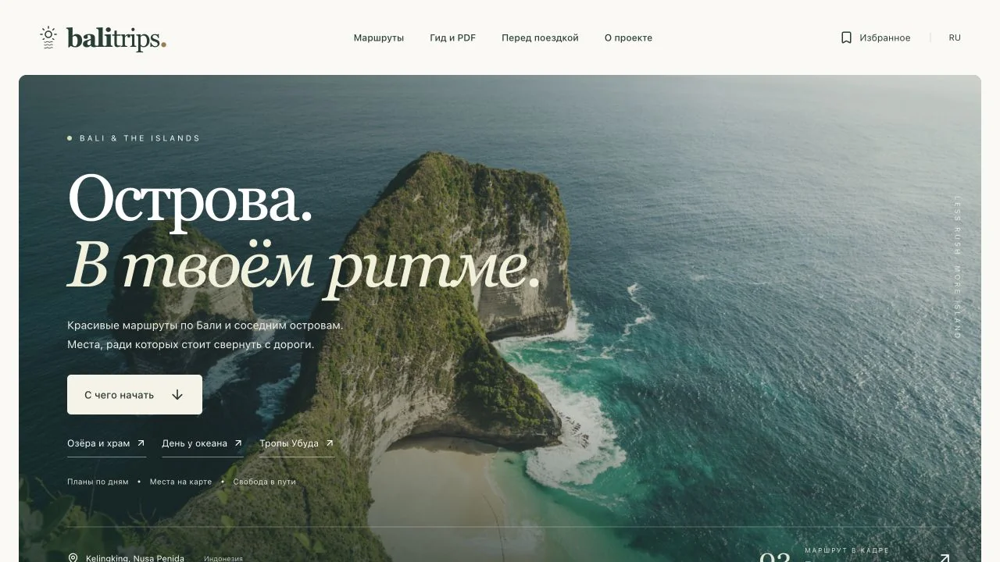
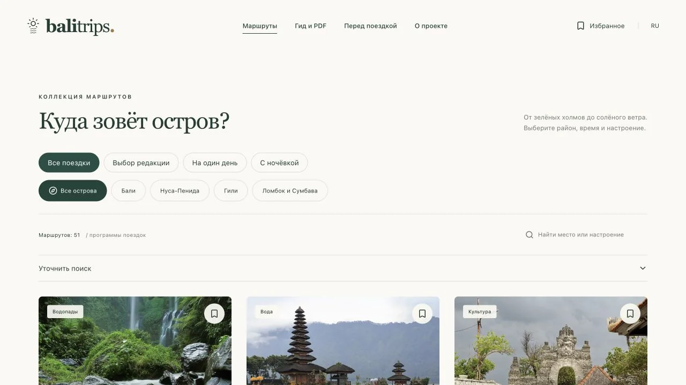
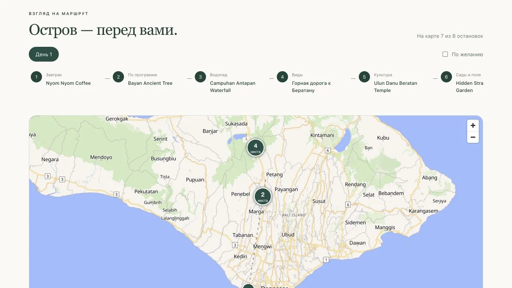
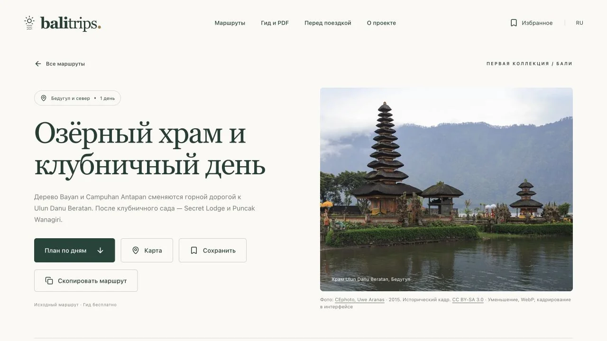

BALI TRIPS / IN THE MAKINGThe islands.
The islands.
At your own pace.
A guide for independent trips around Bali and the neighbouring islands. Fewer tabs and less planning. More room for adventure.
This is a preview of the working prototype. The full version is still in the making.
01
Find your kind of trip
Browse by island, area, duration and the mood of your trip.
02
See the whole route
Day-by-day plans, stops and links to Google Maps.
03
Take it with you
Browser favourites and plans you can save as a PDF.
Take a look inside.
Swipe through the screens →


Image and map credits
Working prototype screenshots, 14 October 2026. Photos are historical and do not confirm current travel conditions. Photo authors, sources and licences. Map: OpenFreeMap · OpenMapTiles · © OpenStreetMap contributors (ODbL). The map shows the order of stops, not calculated driving directions.
Visitor statistics
Visits are counted without cookies, names or stored IP addresses. Do Not Track and Global Privacy Control are respected.